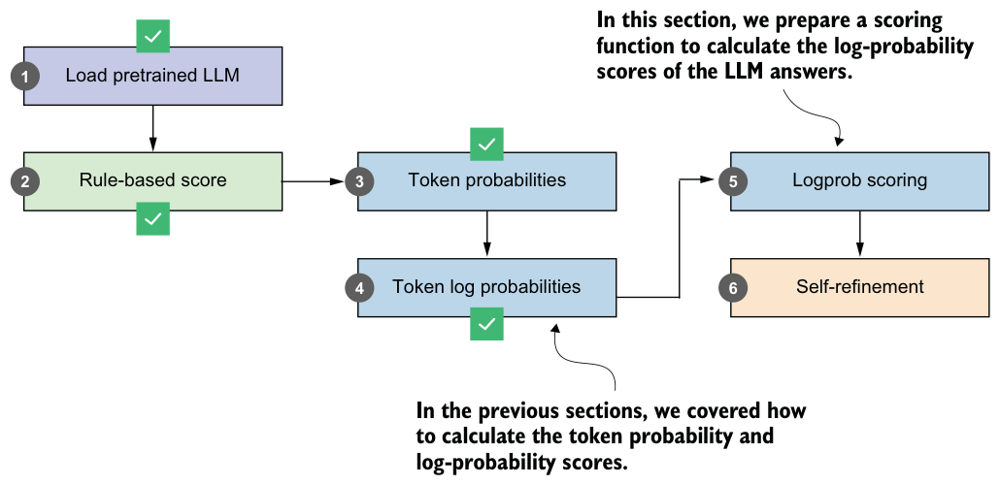
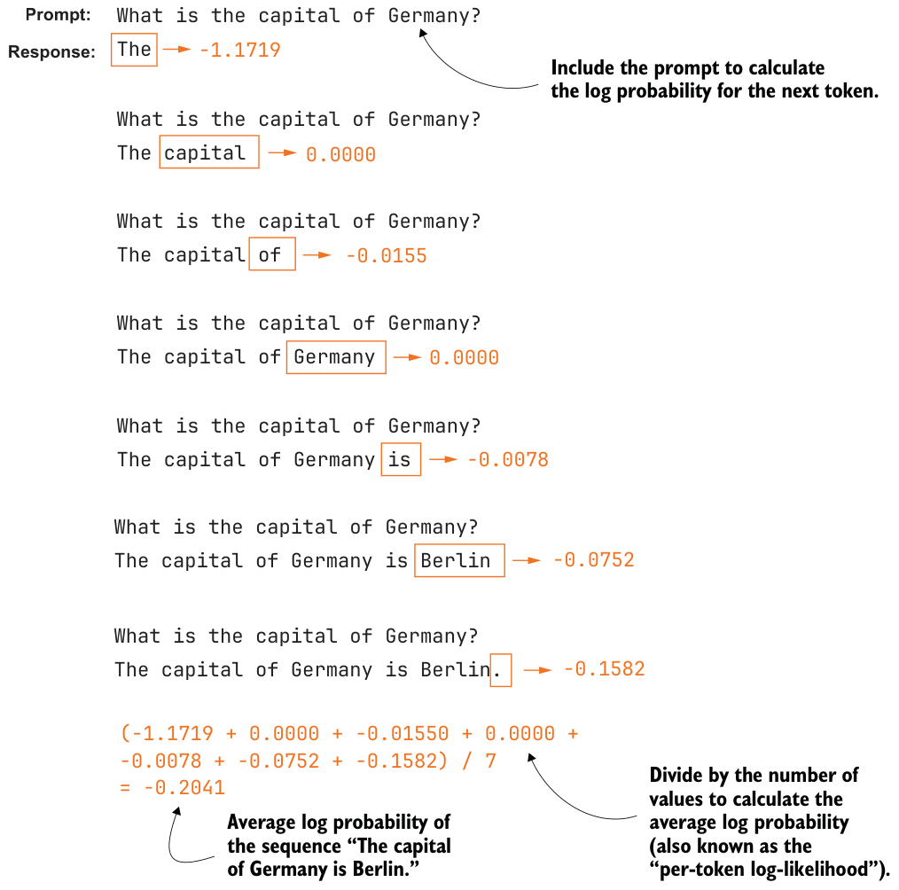

5.6Scoring model confidence with log probabilities
The previous two sections explained the concepts of token probabilities and log probabilities in great detail. In this section, we’ll make slight modifications to the log-probability computation to develop a log-probability-based scorer function analogous to the heuristic scorer we developed at the beginning of this chapter (see figure 5.17).
The logprob scoring method we’ll develop is very similar to the procedure we covered in the previous section. We’ll make two main modifications. First, we’ll exclude the prompt from the score calculation and calculate the score only for the answer tokens.

Second, we’ll average (instead of sum) the token log probabilities so that it is fairer to compare two sequences of different lengths. The updated calculation with these two modifications is shown in figure 5.18.
For illustration, let’s implement the two modifications shown in figure 5.18 using the calc_next_token_logprobas function from listing 5.7. For example, suppose we have the following prompt and answer:
example_prompt = "What is the capital of Germany?"
example_answer = " The capital of Germany is Berlin."
next_token_logprobas, sum_next_token_logprobas = calc_next_token_logprobas(
model, tokenizer, device=device,
prompt=example_prompt+example_answer,
show=False
)
print("Next-token logprobas:", next_token_logprobas)
print("Joint log-probability:", sum_next_token_logprobas)This prints the following output. (Note that the tensor contains scores for the prompt token as well, which is why the numbers appear different from figure 5.18. This will become clearer as you read on.)
Next-token logprobas: tensor([-0.4512, -0.3418, -8.3125, -0.3906,
-3.8125, -3.0469, -1.1719, 0.0000, -0.0155, 0.0000,
-0.0078, -0.0752, -0.1582], dtype=torch.bfloat16)
Joint log-probability: tensor(-17.7500, dtype=torch.bfloat16)What is the capital of Germany?
The
-1.1719What is the capital of Germany?
The capital
0.0000
What is the capital of Germany?
The capital of
-0.0155
What is the capital of Germany?
The capital of Germany
0.0000
What is the capital of Germany?
-0.0078
The capital of Germany is
What is the capital of Germany?
-0.0752
The capital of Germany is BerlinWhat is the capital of Germany?
-0.1582
The capital of Germany is Berlin.
(-1.1719 + 0.0000 + -0.01550 + 0.0000 +
-0.0078 + -0.0752 + -0.1582) / 7
= -0.2041
We can then calculate the number of answer tokens with the following code, which yields 7:
print(len(tokenizer.encode(example_answer)))Then, to calculate the average log probability over the answer tokens, as shown in figure 5.18, we need to average over those seven answer tokens:
last_7 = next_token_logprobas[-7:]
print(last_7)
print(torch.mean(last_7))This prints:
tensor([-1.1719, 0.0000, -0.0155, 0.0000, -0.0078, -0.0752, -0.1582],
dtype=torch.bfloat16)
tensor(-0.2041, dtype=torch.bfloat16)We can see that the resulting average, -0.2041, is similar to what’s shown in figure 5.18.
We can combine the calc_next_token_logprobas code with this calculation into a
new function, avg_logprob_answer.@torch.inference_mode()
def avg_logprob_answer(model, tokenizer, prompt, answer, device="cpu"):
prompt_ids = tokenizer.encode(prompt)
answer_ids = tokenizer.encode(answer)
full_ids = torch.tensor(prompt_ids + answer_ids, device=device)
logits = model(full_ids.unsqueeze(0)).squeeze(0)
logprobs = torch.log_softmax(logits, dim=-1)
start = len(prompt_ids) - 1
end = full_ids.shape[0] - 1 t_idx = torch.arange(start, end, device=device)
next_tokens = full_ids[start + 1 : end + 1]
next_token_logps = logprobs[t_idx, next_tokens] return torch.mean(next_token_logps)
The avg_logprob_answer function is similar to the calc_next_token_logprobas function in listing 5.7, except that we calculate logprobs only for the answer tokens rather than for the whole sequence, including the prompt, and we average the calculated logprob values instead of summing them.
Let’s apply this new function to the prompt and answer from earlier in this section:
score_1 = avg_logprob_answer(
model, tokenizer,
prompt="What is the capital of Germany?",
answer=" The capital of Germany is Berlin.",
device=device
)
print(score_1)This returns -0.2041, as before, which indicates that we implemented the function correctly. We can now also apply this function to the nonsensical "Bridge" answer:
score_2 = avg_logprob_answer(
model, tokenizer,
prompt="What is the capital of Germany?",
answer=" The capital of Germany is Bridge.",
device=device
)
print(score_2)The resulting score here is -3.8906, which is much lower than the "Berlin" score, as expected.
With the average logprob scoring function now in place, we could also calculate the scores for the MATH-500 prompt (prompt_cot) we defined at the beginning of this chapter and the responses we stored as response_1 and response_2. I’ll leave that to you as an exercise.
We’ve spent a lot of time in this chapter going through the concepts of next-token probability and log-probability scoring. One reason for doing so is that we can use these as scorers in the upcoming section on self-refinement. A second reason is that the concept of log probabilities will also be relevant when we implement the reinforcement learning with verifiable rewards training in the next chapter.
At the same time, it is important not to assume logprob scoring can be a universal fix. Because it measures what the model itself strongly prefers, logprob scoring can still favor confident mistakes over correct but less strongly preferred answers. In practice, logprob scoring is best viewed as one useful scoring signal among several, not as a guaranteed tiebreaker.
Exercise 5.3: Using the logprob scorer as a tiebreaker in self-consistency
self_consistency_vote) from the previous chapter (listing 4.17) so it can handle ties among candidate answers. Then run the two implementations on a subset of the MATH-500 dataset to see which tiebreaking method performs better.Exercise 5.4: Using the logprob scorer in a best-of-N setup
avg_logprob_answer) rather than the heuristic scorer or majority voting, as in exercise 5.2. Then run the different implementations on a subset of the MATH-500 dataset to see which tiebreaking method performs better. Tip: You don’t need to modify the self_consistency_vote function itself to apply the tiebreaking. You can apply tiebreaking to the results dictionary returned by self_ consistency_vote, which is used inside the evaluate_math500_stream function from listing 3.15.